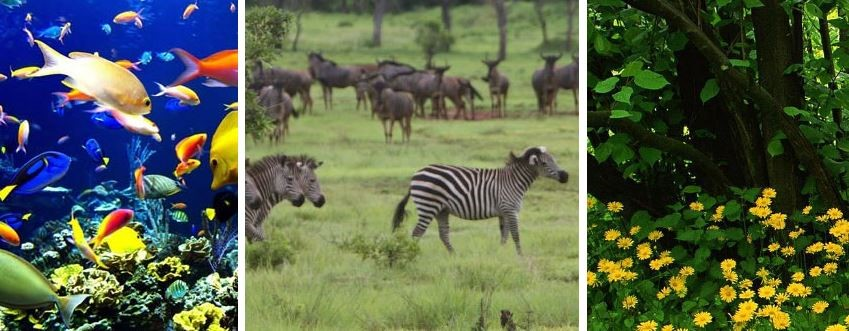
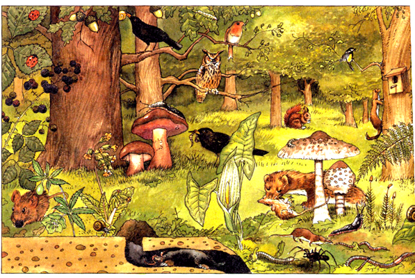

Que es el factor biotico?
Es el factor resultante de las actividades de un ser vivo
o de cualquier componente vivo en un entorno, tales como las
acciones de un organismo que afectan la vida de otro organismo
los componentes bioticos son todos los seres vivos de un
ecosistema. Son los animales, las plantas y los microorganismos
(Ejemplo bacterias) tambien se incluyen los residuos de los
seres vivos y organismos muertos, y las diversas formas en que
afectan al crecimiento y desarrollo de las plantas.

La forma mas simple de entender si algo es biotico es
preguntarse, Es un elemento viviente? Directamente, si la
respuesta es si, entonces sabemos que es biotico (Todo lo
relacionado con los organismos vivos, como se caracterizan o
como interactuan con otros organismos de una misma especie o
distinta) y no abiotico.
Por ejemplo, en el medio ambiente de una codorniz,
son los elementos vivos que interactuan en ella de una forma u
otra, como las presas de la codorniz; insectos, semillas, etc. Y
los depredadores de la codorniz, como los coyotes.
Son los componentes vivos del medio ambiente que
influyen en la manifestacion del factor genetico sobre la
expresion fenotipica. Los macroorganismos se refieren a los
animales como los seres humanos y otros mamiferos, aves,
insectos, aracnidos, moluscos y plantas, mientras que los
microorganismos incluyen hongos, bacterias, virus y
nematodos.

Cuales son las clases de factores
bioticos?
Los elementos bioticos que incluyen flora y fauna
(Incluyen a todos los seres que tienen vida, ya sean animales,
plantas, bacterias etc). Esta distincion se basa en sus
necesidades nutricionales y del tipo de alimentacion.
Los distintos organismos vivos de un ecosistema
obtienen la materia y energia del medio de manera muy variada
(Recordemos que aquellos que lo hacen de una misma forma se
agrupan en lo que se denominan niveles troficos), se clasifican
en tres principales grupos